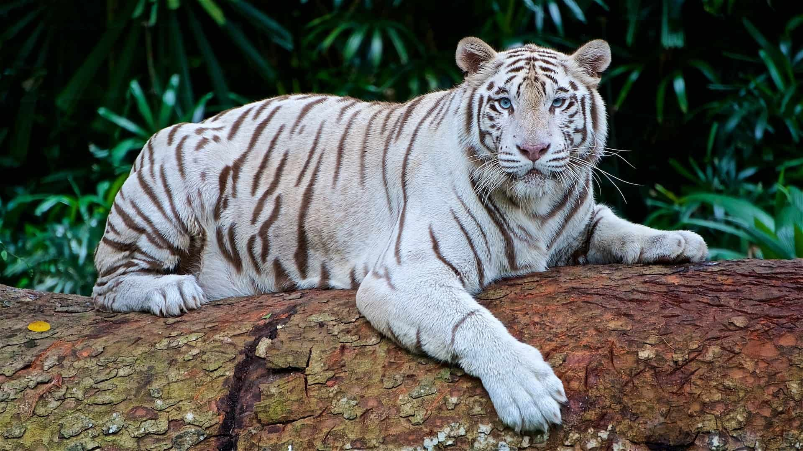

Бенгальский тигр (Panthera tigris tigris) является одним из подвидов тигра, обитающим преимущественно в Индии, Непале, Бутане и Бангладеш.
Эти животные известны своей мощью, грациозностью и характерной полосатой окраской шерсти белого или слабо оранжевого цвета с черными полосками.